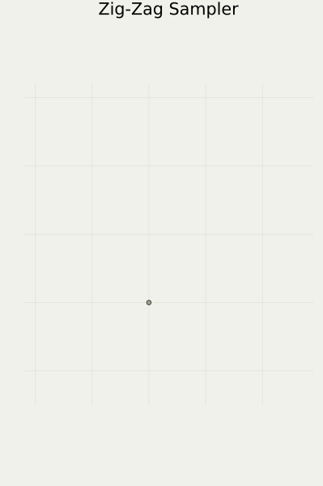
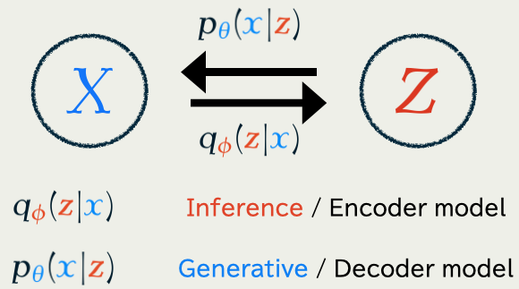
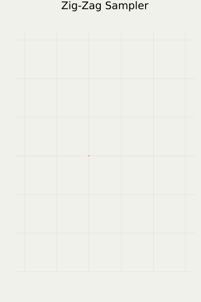

Today’s Contents
- 1 Mathematical Introduction (-2020)
- 2 Developments in Continuous Diffusion Models (2021-2023)
- 3 Discrete Diffusion Models (2024-)

1 Mathematical Introduction
- Problem Setting: Generative Modeling ≒ Bayesian Modeling
- Two main approaches:
- Sampling-based Methods: Monte Carlo methods, etc.
- Optimization-based Methods: Diffusion Models, etc.
- Diffusion Models succeed by
- Discarding inference
- Concentrating on learning to generate
1.1 Problem: Bayesian / Generative Modeling
1.2 Two Popular Solutions
Problem: compute the posterior distribution: p(\textcolor{#E95420}{z}|\{x_i\}_{i=1}^n)\propto p(\textcolor{#E95420}{z})\prod_{i=1}^n p(x_i|\textcolor{#E95420}{z})=\text{prior}\times\prod_{i=1}^n\text{model likelihood of }x_i
| Sampling-based Methods | Optimization-based Methods | |
|---|---|---|
| Purpose | Get a sample | Get an approximation |
| Scalable? | No (Yet) | Yes |
| Exact? | Yes | No |
| E.g. | Monte Carlo | Diffusion Models |
| Mainly used | in Bayesian statistics | in Machine Learning |
This talk is about an optimization-based Methods
1.3 Markov Chain Monte Carlo

This approach is feasible because …
\text{score function}\quad\nabla\log p(\textcolor{#E95420}{z}|\{x_i\}_{i=1}^n)
is evaluatable.
1.4 Piecewise Deterministic Monte Carlo

- Better convergence
(Andrieu and Livingstone, 2021) - Better scalability
(Bierkens et al., 2019) - Numerical stability
(Chevallier et al., 2025)
Available in our package PDMPFlux.jl

] add PDMPFlux1.5 Variational Inference
\text{Posterior distribution:}\qquad p(\textcolor{#E95420}{z}|\boldsymbol{x})\propto p(\textcolor{#E95420}{z})\prod_{i=1}^n p(x_i|\textcolor{#E95420}{z}) is searched in a variational formulation via KL divergence: p(\textcolor{#E95420}{z}|\boldsymbol{x})=\argmin_{q\in\mathcal{P}(\textcolor{#E95420}{\mathcal{Z}})}\operatorname{KL}\bigg(q(\textcolor{#E95420}{z}),p(\textcolor{#E95420}{z}|\boldsymbol{x})\bigg).
1.6 Variational Auto-Encoder (VAE)
In generative modeling, we also have to learn p\in\{p_{\textcolor{#2780e3}{\theta}}\}_{\textcolor{#2780e3}{\theta}\in\R^e}

Jointly trained to minimize the KL divergence \operatorname{KL}\bigg(q_{\textcolor{#E95420}{\phi}}(\textcolor{#E95420}{z}|\textcolor{#2780e3}{x}),p_{\textcolor{#2780e3}{\theta}}(\textcolor{#E95420}{z}|\textcolor{#2780e3}{x})\bigg).
1.6 Variational Auto-Encoder (VAE)
(Kingma and Welling, 2014) found that a part of the KL divergence \begin{align*} &\operatorname{KL}\bigg(q_{\textcolor{#E95420}{\phi}}(\textcolor{#E95420}{z}|\textcolor{#2780e3}{x}),p_{\textcolor{#2780e3}{\theta}}(\textcolor{#E95420}{z}|\textcolor{#2780e3}{x})\bigg)\\ &\qquad=\operatorname{E}_{\textcolor{#E95420}{\phi},\textcolor{#2780e3}{x}}[\log q_{\textcolor{#E95420}{\phi}}(\textcolor{#E95420}{Z}|\textcolor{#2780e3}{x})] -\operatorname{E}_{\textcolor{#E95420}{\phi},\textcolor{#2780e3}{x}}[\log p_{\textcolor{#2780e3}{\theta}}(\textcolor{#E95420}{Z},\textcolor{#2780e3}{x})]+\log p_{\textcolor{#2780e3}{\theta}}(\textcolor{#2780e3}{x})\\ &\qquad=\underbrace{\operatorname{KL}\bigg(q_{\textcolor{#E95420}{\phi}}(\textcolor{#E95420}{z}|\textcolor{#2780e3}{x}),p_{\textcolor{#2780e3}{\theta}}(\textcolor{#E95420}{z})\bigg)-\operatorname{E}_{\textcolor{#E95420}{\phi},\textcolor{#2780e3}{x}}[\log p_{\textcolor{#2780e3}{\theta}}(\textcolor{#2780e3}{x}|\textcolor{#E95420}{Z})]}_{=:-\operatorname{ELBO}(\textcolor{#2780e3}{\theta},\textcolor{#E95420}{\phi})\text{ : we only optimize this part}}+\log p_{\textcolor{#2780e3}{\theta}}(\textcolor{#2780e3}{x}) \end{align*} still lends itself to stochastic optimization.
Once \textcolor{#2780e3}{\theta^*} is learned, we are able to sample from p_{\textcolor{#2780e3}{\theta^*}}(\textcolor{#2780e3}{x})=\int_{\textcolor{#E95420}{\mathcal{Z}}}p_{\textcolor{#2780e3}{\theta^*} }(\textcolor{#2780e3}{x}|\textcolor{#E95420}{z})p_{\textcolor{#2780e3}{\theta^*} }(\textcolor{#E95420}{z})\,d\textcolor{#E95420}{z}
Note that now q_{\textcolor{#E95420}{\phi}} depends on \textcolor{#2780e3}{x} as well.
1.7 Denoising Diffusion Models (DDM)
Concentrating on learning p_{\textcolor{#2780e3}{\theta}}, we fix q_{\textcolor{#E95420}{\phi}}(\textcolor{#E95420}{z}|\textcolor{#2780e3}{x})=q(\textcolor{#E95420}{z}|\textcolor{#2780e3}{x})=q^{t_1}(\textcolor{#E95420}{z_1}|\textcolor{#2780e3}{x})\prod_{i=1}^T q^{t_{i+1}-t_i}(\textcolor{#E95420}{z_{i+1}}|\textcolor{#E95420}{z_{i}}), as a path measure of a Langevin diffusion on \textcolor{#E95420}{\mathcal{Z}}=(\R^d)^{T+1}.

A common choice is an OU process: q^t(z|x)=\operatorname{N}(z;x,t).
1.7 Denoising Diffusion Models (DDM)
As proposed in (Sohl-Dickstein et al., 2015), the KL will reduce to \begin{align*} \mathcal{L}(\textcolor{#2780e3}{\theta})&=\operatorname{KL}\bigg(q(\textcolor{#E95420}{z_{1:T}}|\textcolor{#2780e3}{x}),p_{\textcolor{#2780e3}{\theta}}(\textcolor{#E95420}{z_{1:T}}|\textcolor{#2780e3}{x})\bigg)\\ &=\operatorname{E}[\log q(\textcolor{#E95420}{Z_{1:T}}|\textcolor{#2780e3}{x})]-\operatorname{E}[\log p_{\textcolor{#2780e3}{\theta}}(\textcolor{#2780e3}{x},\textcolor{#E95420}{Z_{1:T}})]+\log p_{\textcolor{#2780e3}{\theta}}(\textcolor{#2780e3}{x})\\ &=:-\operatorname{ELBO}(\textcolor{#2780e3}{\theta})+\log p_{\textcolor{#2780e3}{\theta}}(\textcolor{#2780e3}{x}). \end{align*} By maximizing the \operatorname{ELBO}(\textcolor{#2780e3}{\theta}), we are still performing a form of (approximate) maximum likelihood inference since \operatorname{ELBO}(\textcolor{#2780e3}{\theta})\le\log p_{\textcolor{#2780e3}{\theta}}(\textcolor{#2780e3}{x}). Although approximate as inference, it proved to be very effective in generating high-quality images (Ho et al., 2020).
1.7 Denoising Diffusion Models (DDM)
It is because DDM learns how to denoise a noisy data. DDM …
× constrains the posterior to be \operatorname{N}(0,I_d),
○ the whole training objective is devoted to learn the generator p_{\textcolor{#2780e3}{\theta}}

Summary
- Problem Setting: Generative Modeling ≒ Bayesian Modeling
- Two main approaches:
- Sampling-based Methods: MCMC, PDMC, etc.
- Optimization-based Methods: VI, VAE, DDM, etc.
- DDM succeeds by
- Discarding modeling inference process q_{\textcolor{#E95420}{\phi}}
- Concentrating on learning to generate from p_{\textcolor{#2780e3}{\theta}}
2 Developments in Continuous Diffusion Models
| Data Space \textcolor{#2780e3}{\mathcal{X}} | Continuous | Discrete |
|---|---|---|
| Origin | (Ho et al., 2020) | (Austin et al., 2021) |
| Continuous-time | (Y. Song et al., 2021) | (Campbell et al., 2022) |
| Score-based | (Y. Song et al., 2021) | (Sun et al., 2023) |
| Flow-based | (Lipman et al., 2023) | (Gat et al., 2024) |
2.1 Limit in T\to\infty leads to SDE formulation
2.2 Score-based DDM in SDE formulation
Learning (\textcolor{#2780e3}{X}_{t}) is equivalent to learning the score s_{\textcolor{#2780e3}{\theta}} by the loss \mathcal{L}(\textcolor{#2780e3}{\theta})=\int^T_0\operatorname{E}\bigg[\bigg|\nabla\log q^t(\textcolor{#E95420}{Z_t}|\textcolor{#2780e3}{x})-s_{\textcolor{#2780e3}{\theta}}(\textcolor{#E95420}{Z_t},t)\bigg|^2\bigg]\,dt.
This is proposed by (Y. Song et al., 2021). \mathcal{L}(\textcolor{#2780e3}{\theta}) is called the denoising score matching loss.
2.3 ODE Sampling of Score-based DDM
\text{ODE:}\qquad\frac{d\textcolor{#2780e3}{X}_t}{dt}=-b_t(\textcolor{#2780e3}{X_t})+\frac{1}{2}s_{\textcolor{#2780e3}{\theta}}^t(\textcolor{#2780e3}{X_t})=:v^t_\theta(\textcolor{#2780e3}{X_t}) \tag{1} has the same 1d marginal distributions as \text{\textcolor{#2780e3}{Denoising diffusion} SDE:}\quad d\textcolor{#2780e3}{X_t}=\bigg(-b_{t}(\textcolor{#2780e3}{X_t})+s_{\textcolor{#2780e3}{\theta}}^{t}(\textcolor{#2780e3}{X_t})\bigg)\,dt+dB_t.


2.4 New Loss Enables New Sampling
| SDE sampling | ODE sampling | |
|---|---|---|
| Forward Path | (q^t(\textcolor{#E95420}{z}|\textcolor{#2780e3}{x}))_{t=0}^T | (q^t(\textcolor{#E95420}{z}|\textcolor{#2780e3}{x}))_{t=0}^T |
| Backward Path | (p^t_{\textcolor{#2780e3}{\theta}}(\textcolor{#2780e3}{x}|\textcolor{#E95420}{z}))_{t=0}^T | (?) |
| Speed | Slow | Fast |
| Quality | High | Low |
Problem: “ODE Solver applied to SDE path” doesn’t make sense.
→ Explore other possibilities in the forward path
(Karras et al., 2022) uses Heun’s 2nd order correction method to discretize the ODE.
The ODE parametrization by (J. Song et al., 2021) is favorable from its stable curvature.
Discretizing the SDE by adding extra noise results in higher quality in imagenet dataset.
The SDE approach seems to be more robust to the estimation error in the score (Cao et al., 2023).
2.5 In Search of Better Forward Path


2.6 Flow-based DDM: A Flexible Framework
Instead of score \nabla\log q^t(\textcolor{#E95420}{z}), we learn the vector field u satisfying (\text{continuity equation})\quad\partial_tp^t+\operatorname{div}(p^tu^t)=0. We learn u by a NN (t,x)\mapsto v_{\textcolor{#2780e3}{\theta}}^t(x) with the loss \text{Flow Matching Loss:}\qquad\mathcal{L}_{\text{FM}}(\textcolor{#2780e3}{\theta})=\int_0^T\operatorname{E}\bigg[\bigg|v_{\textcolor{#2780e3}{\theta}}^t(X)-u^t(X)\bigg|^2\bigg]\,dt. To generate a new sample, we let X_0\sim p^0 flow along v_{\textcolor{#2780e3}{\theta^*}}^t.
Usually, FM is understood as a scalable alternative to train CNFs (Chen et al., 2018). Being an alternative to score matching by learning directly the RHS of (1), this approach is called flow matching, independently proposed by (X. Liu et al., 2023), (Albergo and Vanden-Eijnden, 2023), (Lipman et al., 2023).
2.7 From Path to Flow
OT paths result in straight trajectries with constant speed, which is more suitable for stable generation.
Figures are from (Lipman et al., 2023).
Summary: Towards Straighter Paths
- SDE formulation enables faster ODE sampling
- ODE sampling is possible to other choices of q_{\textcolor{#E95420}{\phi}}
\because\quad Only 1d marginals matter (= Flow-based Modeling)- Langevin path ← the Diffusion Model
- Optimal Transport path
- more in discrete settings!

3 Discrete Diffusion Models
3.1 Masking Processes
with some rate R_t(\texttt{mask}|x)>0 of masking x\ne\texttt{mask}.
The reverse process is characterized by the rate \textstyle\hat{R}_t(x|y)=R_t(y|x)\underbrace{\frac{q^t(x)}{q^t(y)}.}_{\text{learn this part using NN}}
| Forward process | Uniform | Masking |
|---|---|---|
| Number of steps needed in backward process | \tilde{O}(d^2/\epsilon) | \tilde{O}(d/\epsilon) |
This continuous-time approach starts with (Campbell et al., 2022), followed by (Sun et al., 2023) and culminates in (Lou et al., 2024).
3.2 Discrete Flow Matching
Targets a forward process \{q_t\}_{t=0}^T\subset\mathcal{P}(\textcolor{#E95420}{\mathcal{Z}}\sqcup\{\texttt{mask}\}) that satisfies \text{linear interpolation:}\qquad q_t(-|\textcolor{#2780e3}{x})=(1-\alpha_t)\delta_{\textcolor{#2780e3}{x}}(-)+\alpha_t\delta_{\texttt{mask}}(-), A backward sampling process is given by \text{rate function:}\qquad R_t(\textcolor{#2780e3}{x}|\mathtt{mask})=\frac{\dot{\alpha}_t}{1-\alpha_t}\underbrace{p^t(\textcolor{#2780e3}{x}|\mathtt{mask}).}_{\text{learn this part using NN}} The predictor p^t(\textcolor{#2780e3}{x}|\mathtt{mask}) is learned by the loss \mathcal{L}(\textcolor{#2780e3}{\theta})=\int^T_0\frac{\dot{\alpha}_t}{1-\alpha_t}\operatorname{E}\bigg[\operatorname{KL}\bigg(p^{\text{\textcolor{#2780e3}{data}}},p^t_{\textcolor{#2780e3}{\theta}}(\textcolor{#2780e3}{X_t}|\texttt{mask})\bigg)\bigg]\,dt.
Theory lacks in this setting.
This approach culminates in (Shi et al., 2024), (S. Liu et al., 2025).
References
Appendix
Algorithmic Stability

One hidden theme was algorithmic stability, which plays a crucial role in the successful methods.
Other Training Objectives
Instead of the vector field u, we can learn its potential v_\theta^t=\nabla s_\theta^t. through the Action Matching loss (Neklyudov et al., 2023) \mathcal{L}_{\text{AM}}(\theta)=\operatorname{E}[s^0_\theta(X_0)-s^1_\theta(X_1)]+\int^1_0\operatorname{E}\bigg[\frac{1}{2}|\nabla s^t_\theta(X)|^2+\partial_ts^t_\theta(X)\bigg]\,dt